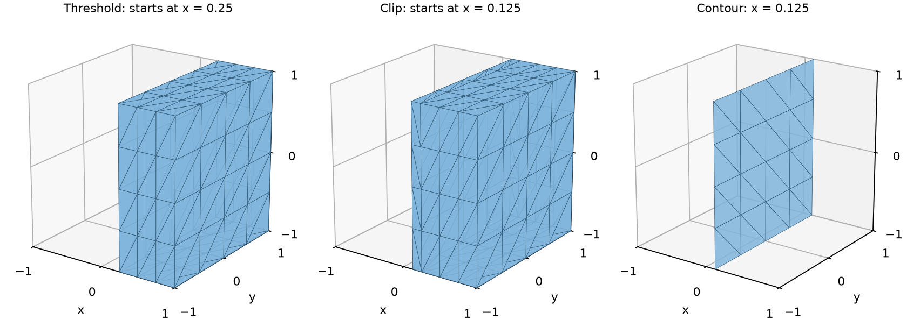

Filter and analyze datasets¶
Choose a filter by what should happen to the cells. Keeping a whole cell, cutting a cell, and extracting its intersection with a surface answer different questions, even when all three use the same scalar threshold.
The running example samples x and the velocity [-y, x, 0] on a grid covering
[-1, 1]³. The simple analytic fields make the results independently checkable.
Prepare named inputs¶
@tack.kernel
def sample(xyz, scalar, velocity):
for p in range(scalar.shape[0]):
x = xyz.get(p)
scalar[p] = x.x
velocity[p] = [-x.y, x.x, 0.0]
data = td.uniform_grid((9, 5, 5), origin=(-1, -1, -1), spacing=(0.25, 0.5, 0.5))
x = tack.empty((data.num_points,))
velocity = tack.empty((data.num_points,), tack.vec3(tack.f32))
sample(data.geometry.values, x, velocity)
data.fields["x"] = td.Field(td.H1(data), x)
data.fields["velocity"] = td.Field(td.H1(data), velocity)
The complete script supplies the imports and initializes the backend.
All following fragments use this dataset. A field argument can be its name
or the td.Field itself; a raw value buffer needs a space wrapper first.
Select cells, cut cells, or extract a surface¶
| Goal | Operation | Output |
|---|---|---|
| Keep cells whose scalar lies in an interval | threshold |
Whole cells, preserving their shapes |
| Keep cells inside a region described by a function | extract_geometry |
Whole cells |
| Keep a named or explicit cell selection | extract_cells |
Whole cells in input order |
| Keep a box of a structured grid, every n-th point | extract_extent |
A structured grid of the same kind (VTK's vtkExtractGrid/vtkExtractVOI); a one-point-thick box is a grid of one dimension less |
| Normals of a surface, its polygons wound alike | surface_normals |
The surface with normals on points and cell_normals on cells (VTK's vtkPolyDataNormals without splitting) |
| Keep the part on one side of a level | clip |
Whole cells and pieces of cut cells |
| Extract a scalar level set, or several | contour |
Triangles in 3D; line cells in 2D; vertices on lines; dimension= picks which cells of a mixed mesh (the highest by default, never mixed); with several values, all of them, each cell's in contour_value |
| Intersect with a plane or another implicit function, or several parallel ones | slice_plane, slice |
Intersection geometry |
| Keep original points by scalar or region | threshold_points, extract_points |
Vertex cells, without cell connectivity |
For point data, threshold checks every corner by default. With
all_points=False, one in-range corner suffices. Neither option interpolates
a cut boundary. For cell data, the cell's one value makes the selection.
whole = td.threshold(data, "x", 0.125, 1.0) # all corners in range
touching = td.threshold(data, "x", 0.125, 1.0, all_points=False)
plane = td.Plane(origin=(0.125, 0, 0), normal=(1, 0, 0))
clipped = td.clip(data, plane, fields=["x"]) # keep x >= 0.125
surface = td.contour(data, "x", 0.125, fields=["velocity"])
section = td.slice_plane(data, origin=(0.125, 0, 0), normal=(1, 0, 0))

At x = 0.125, no grid plane coincides with the requested boundary. The threshold
keeps 48 cells starting at x = 0.25, with total volume 3. The clipped region
starts at x = 0.125 and has volume 3.5. The contour is a plane of area 4.
all_points=False keeps 64 whole cells, including a layer that crosses the
threshold. These different measures are intentional.
Understand the sign of an implicit function¶
Plane, Sphere, Cylinder, Box and Planes expose a value(position)
that is negative inside, zero on the boundary and positive outside. For the
plane in the example it is x - 0.125. Union, Intersection and
Difference combine them (Difference(box, sphere) is the box with a ball
taken out), as VTK's vtkImplicitBoolean does, on the device.
clip(data, plane) keeps values at or above zero, here the positive-x
side. Pass inside=True to keep the other side, inside the function's
region. extract_geometry instead defaults to inside=True, the negative
side, and keeps whole cells. State
which region you mean before choosing flags; the words “inside” and “keep”
do not by themselves specify the same default for both functions.
Decide which fields follow the geometry¶
Filters creating datasets accept fields=: all named fields by default, a
name or list to select them, and [] for geometry alone. Geometry is always
handled separately. An unknown requested name raises KeyError.
| Input association | Typical propagation |
|---|---|
| Floating point data | Gathered for kept points; interpolated onto edge crossings |
| Cell data | Copied to each retained cell or each piece of an input cell |
| L2 data | Retained cell by cell when whole cells survive on a shape-based output |
| Face values | Retained only when the filter has a face map; on an extracted surface, mapped to output cells where supported |
| Side traces or entities with no propagation map | Left behind |
For example, the contour above carries only velocity, interpolated at its
new points; the clip carries only x. Computing a derived field does not
automatically name it: put it in data.fields before extraction if it should
travel with the result.
Integer point labels are not interpolated as continuous data. Use cell labels
when that is the intended association. To preserve provenance of cell pieces,
attach td.cell_ids(data) as a named cell field before filtering; its ids then
refer to the source mesh, while output cell ids refer to the new mesh.
Sets follow provenance, not geometric guesses¶
Cell sets survive selections and follow pieces of selected cells. A face set can become a cell set when its faces become surface cells. Newly generated points do not automatically inherit a point set merely because they lie near an old selected point. The result follows the filter's entity maps.
The mixed-mesh example names a roof cell and a boundary face set, then filters:
mesh.sets["boundary"] = td.boundary_faces(mesh) # a face Set
mesh.sets["roof"] = td.Set(mesh, "cells", [1]) # a cell Set
kept = td.threshold(mesh, "material", 1.5, 3.0) # sets come along
print(f"boundary: {len(mesh.sets['boundary'])} faces; the roof is cell "
f"{kept.sets['roof'].numpy()} of the threshold")
Its returned roof id is zero after thresholding because the output cells have been renumbered. Use the returned set with the returned dataset.
Derived fields and summaries¶
speed = td.magnitude(data, "velocity")
data.fields["speed"] = speed # keep the returned field
velocity_gradient = td.gradients(data, "velocity")
flow = td.flow_quantities(data, velocity_gradient)
summary = td.statistics(data, "x")
magnitude returns a field in the velocity's space. gradients returns cell
gradients by default; at="points" evaluates and averages onto points.
For a 3-vector field its gradient has nine components, in row order
d(u_i)/d(x_j). flow_quantities derives divergence, vorticity and Q from it.
The solid rotation in this example has divergence 0, vorticity [0, 0, 2]
and Q = 1 in every cell.
statistics summarizes stored field samples, not a volume integral.
An arithmetic mean of point temperatures is not a volume-weighted mean on
a stretched mesh. Choose cell measures and a suitable quadrature when the
quantity you need is a physical integral. The function returns Python values
and therefore waits for the device work it reads.
Cell quality¶
cell_quality(data, measures) measures how well shaped each cell is, a cell
field per measure, each 1 on the ideal cell of its shape (equilateral; a cube,
a regular tetrahedron):
| Measure | What it says |
|---|---|
scaled_jacobian |
the worst corner's edges' determinant, edges scaled to unit length, relative to the ideal cell's: 1 ideal, 0 flat, negative inverted |
jacobian_ratio |
the least corner determinant over the greatest: 1 for every simplex, below 1 as a cell tapers |
condition |
the worst corner's condition number against the ideal cell's: 1 ideal, growing as it distorts, the largest float when inverted |
edge_ratio, min_edge, max_edge |
the longest edge over the shortest; the shortest and longest, in the spatial unit |
They are Verdict's definitions (VTK's vtkMeshQuality), matched to VTK where
it defines them, and extended to every shape Tack has: the corners' edges are
the geometry's Jacobian applied to the reference cell's edge directions, so
order-2 cells are measured along their curved edges, and wedges and pyramids
get every measure. Polyhedra and polygons, which have no reference cell, are
measured by the fan tetrahedra and triangles Tack evaluates them in.
import numpy as np
import tack
import tack.dataset as td
tack.set_default_device("cpu")
mesh = td.tetrahedralize(td.uniform_grid((4, 4, 4)))
quality = td.cell_quality(mesh, ["scaled_jacobian", "condition", "edge_ratio"])
sj = quality["scaled_jacobian"].values.numpy()
print(f"scaled Jacobian {sj.min():.3f} to {sj.max():.3f}")
mesh.fields["sj"] = quality["scaled_jacobian"]
worst = td.threshold(mesh, "sj", -1.0, 0.75) # the right-corner tetrahedra
assert np.isclose(sj.max(), 1.0) and np.isclose(sj.min(), 1 / np.sqrt(2))
assert worst.num_cells == np.count_nonzero(sj < 0.75)
Feature edges¶
feature_edges(data, angle=30.0) finds a surface's edges by how many cells
meet there and at what angle, as VTK's vtkFeatureEdges: boundary edges
(one cell), feature edges (two cells whose normals are at least angle
degrees apart), non-manifold edges (three or more cells) and, if asked,
manifold edges (the rest of the two-cell edges). The result is line cells
on the same points with a kind cell field (EdgeKind), point fields
carried. A volume mesh's surface comes from extract_surface first.
import numpy as np
import tack
import tack.dataset as td
tack.set_default_device("cpu")
box = td.uniform_grid((4, 3, 3))
surface = td.extract_surface(box, td.boundary_faces(box))
edges = td.feature_edges(surface) # the box's 12 edges, in segments
kinds = edges.fields["kind"].values.numpy()
print(edges.num_cells, "feature edges")
assert (kinds == td.EdgeKind.FEATURE).all() and edges.num_cells == 4 * 3 + 4 * 2 + 4 * 2
open_top = td.uniform_grid((4, 4))
assert td.feature_edges(open_top).num_cells == 12 # its boundary
Check algorithm support before building a pipeline¶
| Task | Shape-based | Polyhedral / polygonal | Polyline |
|---|---|---|---|
| Select whole cells; measure cells | Yes | Yes | Yes |
| Extract boundaries | Yes, subject to line-cell limitations | Yes | Chain ends |
| Contour or slice | Yes, of order-1 and L2 fields; above order 1, or on a curved geometry, on linear sub-cells of segments, quads, hexahedra, triangles, tetrahedra and wedges (subdivision=, tolerance=); an order-2 H1 field on pyramids is refused |
Yes | Contour: vertices, of point data |
| Clip cells | H1 geometry required; above order 1, or on a curved geometry, whole cells kept as they are and the others cut on linear sub-cells (a PartitionedDataSet; threshold too) |
Polyhedra: yes, into polyhedra (faces clipped, iso-polygons as caps); polygons not yet | Currently unsupported |
| Project between point and cell data | Yes | Yes | Yes |
| Gradients and flow quantities | Yes (2D cells in their plane) | Yes: Green–Gauss over each polyhedron's faces, and over each polygon's edges in its plane (exact for linear fields) | Yes (zero) |
| Locate cells and probe | Yes | Yes: in sub-tetrahedra or fanned triangles; cells must be star-shaped from their points' mean | Yes, on segments |
| Advection and streamlines | Yes, 2D and 3D cells | Yes, as probing locates | Currently unsupported |
| Carry ghost marks over pieces | Yes | Yes | Yes |
An empty supported filter result is a valid dataset. Check num_cells before
assuming an extraction contains visible geometry. Algorithms requiring a
reference element reject unsupported topologies; storing H1 values alone
does not change that support. The
reference matrix has the details.
Run and check¶
uv run python docs/examples/data_analysis.py --arch cpu --check
uv run --with matplotlib python docs/examples/data_analysis.py --check --output filters.png
The checks include counts, independently calculated volumes and areas, interpolated velocity, flow derivatives, probe validity and analytic rotation. Download the complete program.
Continue with Mesh Kernels to implement an operation, or Sample and Connect Simulations to connect stages.